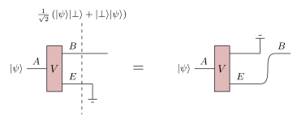
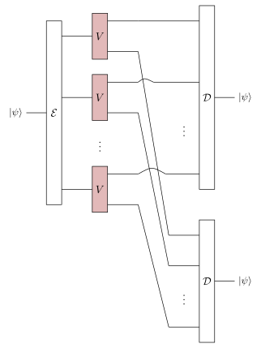

The quantum capacity \(Q(p)\) of the erasure channel \(\mathcal{N}:\rho\mapsto (1-p)\rho + p\lvert\perp\rangle\langle\perp\rvert\) is zero if \(p\geq 1/2\) and $$ Q(p)=1-2p \quad \forall p\in [0,1/2). $$ The attainability of this rate can be proven using random stabilizer codes and a probabilistic existence argument1,2. (Perhaps I will update with this direction later.) In the remainder of this note we proof-sketch the upper bound.
Let \(Q\equiv Q(p)\). If Alice and Bob are allowed \(m\) uses of the identity channel combined with \(n\) uses of the erasure channel, then they can reliably encode at most \(m+Qn\) qubits for large \(m\) and \(n\)3. Now, suppose we have \(0\leq p\leq 1/2\), and imagine Alice can protect \((1-2p)\) of the qubits (as a fraction) from the noise, but each of the remaining qubits are sent through an erasure channel with parameter \(1/2\). Then the above argument tells us the rate in this situation is at most \(R(p) \equiv (1-2p)+Q(\tfrac{1}{2})\).
However, for a large enough number of sent qubits, the above noise model is equivalent4 to erasure with probability \(p\), with the extra knowledge of which qubits are protected. That knowledge can only help, so \(Q(p)\leq R(p)\).
Finally, \(Q(\tfrac{1}{2})\) is necessarily zero for the following reason. When \(p=1/2\) one complementary channel of the erasure channel is the same erasure channel:
Thus any protocol with nonzero rate used by Bob could just as well be used by Eve to prepare the encoded state in her register, resulting in two transmitted copies of the encoded state each with arbitrarily high fidelity:
